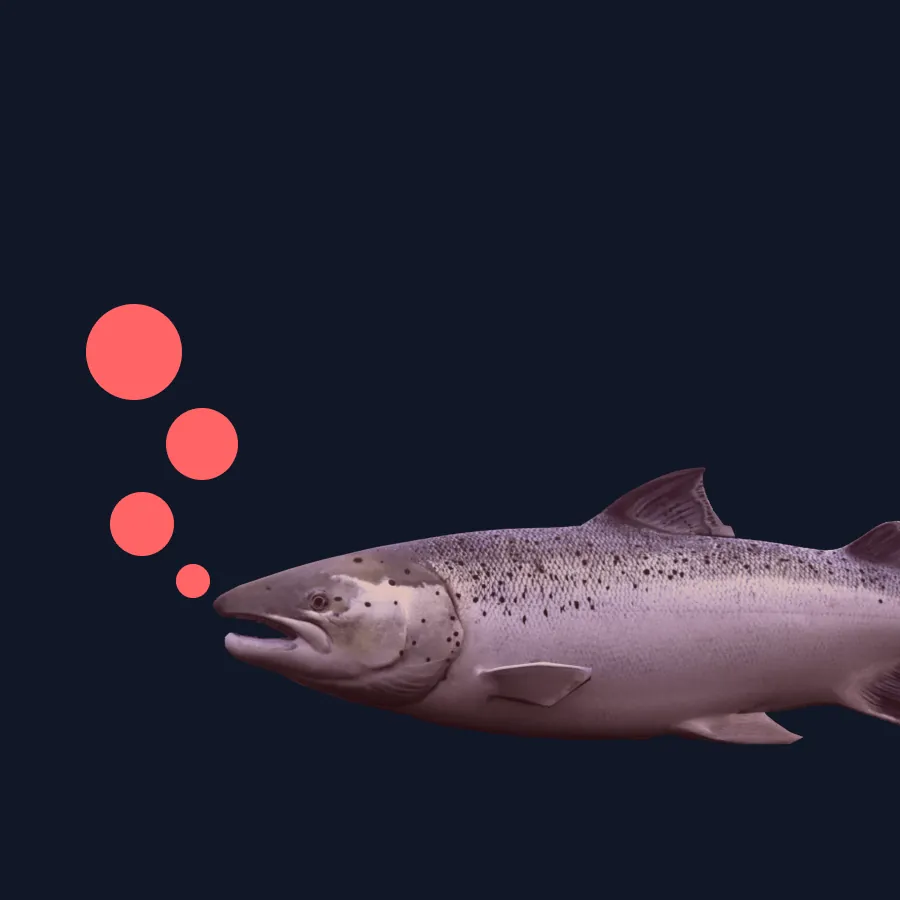

Forside/Slik virker det
Slik virker det
Data fra Aquabyte-systemet gir unik innsikt i fisken og miljøet den lever i – slik at du kan ta bedre beslutninger gjennom hele produksjonsprosessen.
Produksjonsfasen
Innsikt der fisken er
Systemet følger fisken fra utsett til slakt, med data som gjør endringer synlige tidlig.
| Fase | Innsikt |
|---|---|
| Utsett | Vekt og tilvenning i merden. |
| Vekst | Biomasse og vektutvikling. |
| Fiskehelse | Velferdsindikatorer og lus. |
| Fôring | Appetitt og forbruk. |
| Slakt | Grunnlag for planlegging og dokumentasjon. |
Portal og oppfølging
Data har først verdi når de gir bedre beslutninger
I portalen blir komplekse data til handlingsrettet innsikt som gir full kontroll i driften.
Våre Customer Success- og Insight-team har erfaring fra havbruksnæringen, og følger opp at tallene blir brukt riktig.

Vil du se et system i drift?
Book en demo, så viser vi portalen med deres spørsmål.